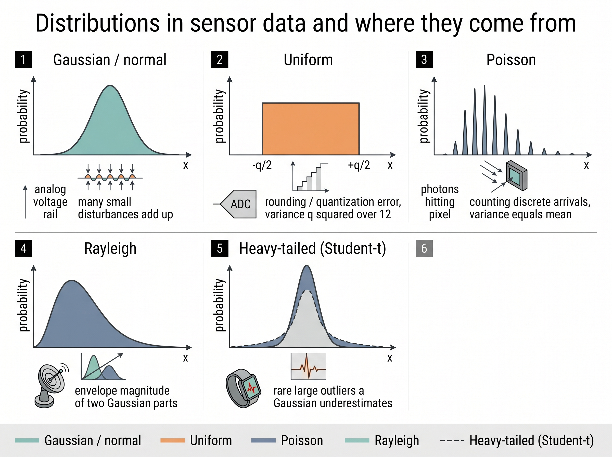

"I reported the temperature as 21.4 degrees with the confidence of a stone tablet. Nobody asked me the one question that mattered: 21.4, plus or minus what?"
A Recalibrated AI Agent
Prerequisites
This section assumes you can read the additive measurement model \(x = h(s) + \eta\) from Chapter 2 and that you know a sensor stream is a sequence of samples \(x[n]\) produced by sampling a continuous signal, as developed in Chapter 3. You need first-year calculus (integrals and sums) and a little linear algebra for the covariance matrix at the end. No prior probability course is required; the distributions and moments you need are built here and collected in Appendix A. Everything downstream in this chapter, estimators, Bayesian priors, and the uncertainty split, rests on the language introduced in this one section.
Why a single number is never the whole measurement
A sensor never hands you a value; it hands you a value drawn from a distribution. Point the same accelerometer at the same still table and read it a thousand times and you get a thousand slightly different numbers, jittering around the truth. That jitter is not a defect to be apologized for. It is information: its shape tells you the noise floor, its width tells you how much to trust any single reading, and its tails tell you how often the sensor will lie badly. This section gives you the vocabulary to describe that jitter precisely, so that every later chapter can answer "how sure are we?" instead of just "what did we get?" A model that consumes raw values and ignores their distribution is discarding half of what the hardware told it.
We treat each sample as a random variable: a rule that assigns a number to the outcome of a random experiment, here the experiment being "let the transducer report once." A random variable \(X\) is described completely by its distribution, and for a real-valued sensor reading that distribution is captured by a probability density function \(p_X(x)\), where \(p_X(x)\,dx\) is the probability that a reading lands in the sliver \([x, x+dx]\). The density integrates to one, \(\int_{-\infty}^{\infty} p_X(x)\,dx = 1\), which says the sensor always returns something.
The probability density function \(p_X(x)\) is precisely a non-negative function whose integral over any interval gives the probability the reading lands in that interval; it is not itself a probability (its value can exceed 1) but a probability per unit of the measured quantity. It matters because it is the complete description of one continuous reading: every mean, variance, and alarm threshold you compute later is an integral taken against it. Mechanically it works by weighting outcomes so that dense regions of \(x\) accumulate more probability mass than sparse ones, and you recover any probability by integrating over the range you care about. Reach for the density when the reading is continuous and you want the full shape; switch to a probability mass function for discrete counts (a Poisson pixel), or to the cumulative form \(F_X(x)\) when all you need is "probability below a threshold."
From one sample to a random variable: what, why, and when
What changes when we call a reading a random variable is that we stop asking "what is the value?" and start asking "what values are plausible, and with what weight?" Why this matters for sensory AI is that the physical noise sources of Chapter 2, thermal agitation, quantization, shot noise, are themselves random processes, so the only faithful description of a reading is probabilistic. How we work with it is through two summaries that we can actually compute from data: the density (or its cumulative form \(F_X(x) = P(X \le x)\)) when we want the full picture, and a handful of moments when we want a compact fingerprint. When you can get away with just the moments rather than the full density is the recurring judgment call of this chapter, and the Gaussian case, where two moments are the whole density, is why the Gaussian shows up everywhere. That last judgment, how few moments you can safely keep, only sharpens once you know which distributions a sensor actually produces, so we meet the usual cast first.
The distributions that actually appear in sensor data
A small cast of distributions covers most of what a sensor stream throws at you, and each earns its place from a physical mechanism, not mathematical convenience.
The Gaussian (normal) distribution, \(p(x) = \tfrac{1}{\sqrt{2\pi}\sigma}\exp\!\big(-\tfrac{(x-\mu)^2}{2\sigma^2}\big)\), dominates because of the central limit theorem (CLT): when many small independent disturbances add up, as they do in an analog front end, their sum tends toward a Gaussian regardless of the individual shapes. That is why we model thermal noise on a voltage rail as Gaussian, and why the Kalman filter of Chapter 9 can be optimal and cheap at the same time. The uniform distribution describes quantization error: an analog-to-digital converter (ADC) with step \(q\) rounds the truth, and the leftover error spreads flat across \([-q/2, q/2]\), giving the famous quantization-noise variance \(q^2/12\). The Poisson distribution counts discrete arrivals, photons hitting a pixel or ticks on a Geiger counter, so a photon-limited camera or lidar return is typically well modeled as Poisson. Its signal-dependent noise (variance equal to the mean) is why dark scenes look grainier.
Checkpoint
So far: each distribution that appears in sensor data earns its place from a physical mechanism, not from mathematical convenience, the Gaussian from many small disturbances summing, the uniform from quantization rounding, and the Poisson from counting discrete arrivals.
The Rayleigh distribution appears whenever you take the magnitude of two independent Gaussian components, which is exactly the envelope of a radar or radio-frequency (RF) signal; it is the reason Chapter 44 reasons about detection thresholds probabilistically. Finally, heavy-tailed distributions (Student-t, log-normal) model the rare large outliers that a pure Gaussian badly underestimates, such as a motion spike from a footstep on a wearable. In short: a sensor reading is a distribution wearing the disguise of a single number, and its moments are how you see through the disguise. Figure 4.1.1 illustrates the distributions that appear in sensor data and their physical mechanisms.

Common Misconception
The misconception is that the central limit theorem guarantees sensor noise is Gaussian, so normality can always be assumed. It does not: the CLT applies only to sums of many independent, comparably sized contributions, and it says nothing about the tails, which are exactly where a single dominant source (a footstep spike, a cosmic-ray hit, a stuck quantization floor) survives and makes the true distribution decidedly non-Gaussian.
Two moments are a promise, not a description
Reporting a mean and a standard deviation is equivalent to asserting the data is Gaussian, because those two numbers pin down a Gaussian exactly and pin down nothing else exactly. When your sensor noise is genuinely Gaussian, that promise is free and everything downstream simplifies. When it is not, for example a bimodal reading from a sensor that flips between two states, or a heavy-tailed stream punctuated by spikes, the mean-and-variance summary quietly discards the very structure that matters for detection and safety. The discipline is to check the higher moments and the histogram before you commit to a two-number summary, not after a false alarm forces you to. (The mean, variance, and standard deviation invoked here are defined precisely in the next subsection, Moments: the compact fingerprint.)
Moments: the compact fingerprint of a distribution
Get the fourth moment wrong and the cost is not abstract: a fall detector cries wolf dozens of times a day, or a drone's estimator trusts a spiking accelerometer and tumbles out of the sky. The compact summaries below are what stand between a shipping device and those failures. Having just been warned to inspect the higher moments before trusting a two-number summary, we can now pin down exactly what those moments are. Moments are expectations of powers of the variable, where the expectation \(\mathbb{E}[\cdot]\) is just the probability-weighted average of a quantity over all outcomes, and the first four carry almost all the intuition you need. The mean \(\mu = \mathbb{E}[X] = \int x\,p(x)\,dx\) is the center of mass, the value a long average converges to; for a sensor it is the true signal plus any constant bias. The variance \(\sigma^2 = \mathbb{E}[(X-\mu)^2]\) is the spread, and its square root, the standard deviation \(\sigma\), lives in the same units as the reading, which is why we quote "plus or minus \(\sigma\)." The skewness \(\gamma_1 = \mathbb{E}[(X-\mu)^3]/\sigma^3\) measures asymmetry: a positive skew means occasional large-positive excursions, the signature of a rectified or count-based signal. The kurtosis \(\gamma_2 = \mathbb{E}[(X-\mu)^4]/\sigma^4\) measures tail heaviness; a Gaussian sits at exactly 3, and anything meaningfully above it warns you that rare large events happen more often than a Gaussian would predict, which is a direct input to how you set alarm thresholds and to the outlier-robust filters of Chapter 6. The moment ladder in Figure 4.1-1 traces this whole pipeline: a raw sample stream collapses into a density, and each successive moment reads off one more feature of that density's shape.
import numpy as np
from scipy import stats
# Simulated 100 Hz accelerometer: gravity bias + Gaussian noise + rare spikes
rng = np.random.default_rng(0)
n = 20_000
clean = 9.81 * np.ones(n) # true value (m/s^2)
noise = rng.normal(0.0, 0.05, n) # thermal jitter, sigma = 0.05
spikes = rng.binomial(1, 0.002, n) * rng.normal(0, 1.0, n) # rare footstep taps
x = clean + noise + spikes
print(f"mean = {x.mean():.4f}") # ~ 9.81, recovers the true value
print(f"std = {x.std():.4f}") # inflated above 0.05 by the spikes
print(f"skewness = {stats.skew(x):+.3f}") # near 0: spikes are symmetric
print(f"kurtosis = {stats.kurtosis(x):+.3f}") # >> 0 (excess): heavy tails, not Gaussian
stats.kurtosis reports by default) is the tell that this stream is not Gaussian: the rare spikes fatten the tails while leaving the mean and skew almost untouched, exactly the structure a mean-and-variance summary would hide.The code makes the earlier point concrete: a clean Gaussian stream and the spiked stream report nearly the same mean and standard deviation, yet only the kurtosis reveals that one of them will throw values no Gaussian safety margin ever budgeted for.
Step-Through: computing the four moments by hand
Trace the moment formulas through a four-sample toy stream so the integrals become arithmetic. Take readings \(x = \{2, 4, 4, 6\}\) (in whatever unit; treat each as equally likely).
- Mean. \(\mu = (2 + 4 + 4 + 6)/4 = 16/4 = 4\). The center of mass sits at 4.
- Center the data. Deviations \((x-\mu)\) are \(\{-2, 0, 0, +2\}\).
- Variance. Square and average: \(\sigma^2 = ((-2)^2 + 0^2 + 0^2 + 2^2)/4 = (4+0+0+4)/4 = 2\), so \(\sigma = \sqrt{2} \approx 1.414\).
- Skewness. Third powers of the deviations are \(\{-8, 0, 0, +8\}\); their average is \(0\), so \(\gamma_1 = 0/\sigma^3 = 0\). The stream is perfectly symmetric, as its mirror shape promised.
- Kurtosis. Fourth powers are \(\{16, 0, 0, 16\}\), averaging to \(8\). Divide by \(\sigma^4 = 2^2 = 4\): \(\gamma_2 = 8/4 = 2\). That is below the Gaussian value of 3, so this toy distribution has lighter tails than a Gaussian (excess kurtosis \(2 - 3 = -1\)), which fits a spread that never strays past two units from the mean.
Every moment in the section is this same recipe: center, raise to a power, average, normalize. The only change for continuous data is that the average becomes an integral against \(p(x)\).
Right tool: distribution fitting in three lines
Coding a maximum-likelihood fit (picking the distribution parameters that make the observed data most probable) and moment estimator by hand is a page of numerics per distribution. SciPy collapses it: params = stats.t.fit(x) fits a heavy-tailed Student-t and returns the degrees of freedom, location, and scale in one call, and stats.probplot(x, dist="norm") produces the quantile-quantile (Q-Q) plot that visually confirms non-normality. That is roughly 40 lines of hand-rolled optimization and quantile math reduced to 2, with the library handling numerical stability, edge cases, and a catalog of 100-plus distributions. Keep the from-scratch moment code above for understanding; reach for scipy.stats in production.
Signals are sequences of random variables: joints, stationarity, and correlation
A single sample is a random variable; a signal \(x[0], x[1], \dots\) is a whole family of them, a random process. What ties the samples together is the joint distribution (the single probability rule governing several samples considered together, not one reading at a time), and the practical shortcut for describing it is the autocovariance \(C[k] = \mathbb{E}[(x[n]-\mu)(x[n+k]-\mu)]\), which measures how strongly a reading predicts one \(k\) steps later. Real sensor noise is rarely "white" (uncorrelated across time); a drifting gyroscope bias, for instance, produces samples that stay correlated for seconds. We usually assume wide-sense stationarity: the mean and autocovariance hold steady over time. That assumption lets us estimate those statistics by averaging along the stream, so we do not need many parallel sensors. When two channels are involved, say an accelerometer's three axes, the pairwise second moments assemble into a covariance matrix \(\Sigma\). Its off-diagonal entries reveal cross-axis coupling, and its structure feeds directly into the multivariate Gaussian that Chapter 9 propagates through time.
Mental Model
Think of autocovariance and stationarity like day-to-day weather. Today being rainy makes tomorrow more likely rainy, but that pull fades the further out you look, until next month's forecast is essentially uncorrelated with today; that decaying dependence is exactly what \(C[k]\) measures as the lag \(k\) grows. Wide-sense stationarity is the added assumption that the weather's rules (its typical level and how fast the correlation fades) hold steady across the window you observe, and that assumption is what lets you learn those rules from one long record rather than needing a fresh planet to sample for every day.
A wearable that learned to distrust its own tail
A fall-detection algorithm on a wrist wearable was tuned assuming Gaussian accelerometer noise, so it flagged any reading more than four standard deviations from the resting mean. In the lab it worked. In the field it fired dozens of false alarms a day, because ordinary activities, clapping, setting down a mug, a firm handshake, produced sharp taps that a Gaussian model rated as one-in-a-million events. Plotting the field histogram exposed excess kurtosis near 12, far from the Gaussian's 3. The fix was not a bigger model; it was a better distribution. The team refit the resting-state noise as a Student-t, whose heavy tails absorbed the everyday taps, and reserved the alarm for the genuinely extreme, sustained excursions that a real fall produces. False alarms dropped by an order of magnitude. The moral: the fourth moment was the whole story, and the two-moment summary had been hiding it.
Exercise: quantization noise from first principles
An ADC quantizes to steps of size \(q\), so the rounding error is uniform on \([-q/2, q/2]\). (a) Show from the definition of variance that the error has mean 0 and variance \(q^2/12\). (b) A 12-bit converter spans a 5 V range. Compute \(q\) and the resulting noise standard deviation in millivolts. (c) Your Gaussian sensor noise already has \(\sigma = 3\) mV. Using the fact that independent noise variances add, decide whether the quantization step is negligible or a real contributor, and state the rule of thumb this gives for choosing ADC resolution relative to the analog noise floor.
Self-check
- Why does reporting only a mean and standard deviation amount to an implicit claim that the data is Gaussian, and when is that claim safe?
- A pixel's photon count follows a Poisson distribution with mean \(\lambda\). What is its variance, and why does this make dark regions of an image noisier than bright ones in a relative sense?
- Two accelerometer axes have a large off-diagonal entry in their covariance matrix. What physical or mounting fact might explain it, and why can you not treat the axes as independent?
Research Frontier
Moments and a fitted density still assume you guessed the right parametric family. Distribution-free conformal prediction sidesteps that assumption: Angelopoulos and Bates' 2023 monograph Conformal Prediction: A Gentle Introduction (Foundations and Trends in Machine Learning) shows how to wrap any sensor model with intervals that carry a finite-sample coverage guarantee with no Gaussian assumption required, and follow-up work on adaptive conformal inference extends that guarantee to the drifting, non-stationary streams that real sensors actually produce.
Try It: Catch a non-Gaussian sensor in ten minutes
Use your laptop or phone's own motion sensor to reproduce the heavy-tail story with just NumPy, SciPy, and Matplotlib.
- Grab a stream: record about 30 seconds of phone or laptop accelerometer data (apps such as phyphox export CSV), or, if no sensor is handy, synthesize one with the simulation code earlier in this section, then load a single axis into a NumPy array
x. - Compute the first four moments with
x.mean(),x.std(),scipy.stats.skew(x), andscipy.stats.kurtosis(x), and write down the excess kurtosis. - Draw a histogram of
xwithdensity=Trueand overlay the Gaussian that shares that mean and standard deviation; look for a peak that sits too tall and tails that spread too wide. - Run
scipy.stats.probplot(x, dist="norm", plot=plt)and confirm the points bend away from the straight reference line at both ends, the visual fingerprint of heavy tails. - Fit a heavy-tailed model with
df, loc, scale = scipy.stats.t.fit(x), overlay its density on the same histogram, and check that a smalldftracks the tails better than the Gaussian did.
Real-World Application: drone flight control
The PX4 autopilot's EKF2 state estimator (EKF is the extended Kalman filter, the nonlinear cousin of the Kalman filter introduced in Chapter 9), which flies a large and widely deployed fleet of consumer and industrial drones, treats each inertial measurement unit (IMU) channel exactly as this section prescribes: the accelerometer and gyroscope noise densities are per-axis variances the operator tunes (the EKF2_ACC_NOISE and EKF2_GYR_NOISE parameters), and the filter propagates a full covariance matrix so cross-axis coupling is not ignored. Set those variances too small and the estimator trusts a noisy sensor and diverges; set them from the measured moments and the same airframe holds a stable hover. The two-moment fingerprint of a sensor stream is, quite literally, a flight-safety parameter.
The heavy-tail distribution was born in a brewery
The Student-t distribution we reach for to tame sensor spikes was derived in 1908 by William Sealy Gosset, a chemist at the Guinness brewery in Dublin who needed to reason about small samples of barley and yeast. Guinness forbade its staff from publishing, fearing trade secrets would leak, so Gosset published under the pseudonym "Student." The name stuck, and more than a century later the distribution that let a brewer judge a batch from a handful of measurements is the same one a wearable uses to tell a firm handshake from a genuine fall. The heavy tails that hid a brewery's variability now absorb an accelerometer's everyday taps.
Lab: fingerprint a real activity dataset by its moments
Goal. Confirm empirically that different sensor regimes leave distinct signatures in the first four moments, and that "mean plus variance" alone throws away separable structure.
Tools. Python with NumPy, SciPy, and Matplotlib, plus the UCI Human Activity Recognition Using Smartphones dataset (free download; raw triaxial accelerometer signals sampled at 50 Hz while volunteers walked, sat, and climbed stairs). No hardware required.
Steps (about 20 minutes). Load the raw total_acc_x signal and the activity labels. For each activity class, extract that axis and compute mean, standard deviation, scipy.stats.skew, and scipy.stats.kurtosis. Tabulate the four moments per activity.
What to vary. Switch between the sitting/standing (near-static) classes and the walking/stair-climbing (dynamic) classes; then repeat on a different axis.
What to observe. The static classes should cluster near a low variance and near-Gaussian kurtosis, while the dynamic classes show inflated variance and, on the impact-heavy stair activities, visible excess kurtosis from foot-strike spikes. Note how two activities can share almost the same mean yet separate cleanly on the third and fourth moments, the exact structure a two-number summary would erase. As a stretch, overlay each class histogram against a fitted Gaussian and a fitted Student-t and see which class most needs the heavy tail.
What's Next
In Section 4.2, we turn from describing distributions to inferring them from data. The moment estimates you computed above were guesses at unknown truths, and every guess has a bias and a variance of its own. We will formalize what makes an estimator good, expose the bias-variance tradeoff that governs every fit in this book, and derive maximum likelihood, the principled engine that turns a stream of samples into the best parameters for the distribution behind them.